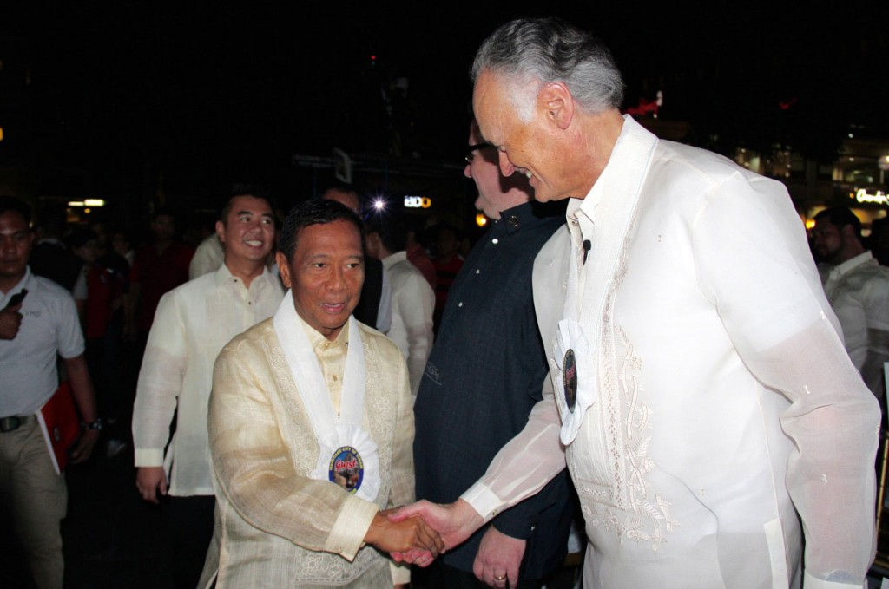

O vice-presidente das Filipinas, Jejomar Binay (à esquerda), aperta a mão do fundador-presidente da New7Wonders, Bernard Weber (à direita), nas cerimônias oficiais de inauguração da New7Wonders Cities para Vigan.
Com uma série de campanhas de votação global, a New7Wonders está inspirando e conscientizando as pessoas sobre o legado que estamos transmitindo aos nossos filhos. Por meio de suas campanhas, a New7Wonders destaca o que nos une – em oposição ao que nos separa – e também enfatiza a importância de cuidar do que será deixado para as próximas gerações.
A campanha oficial das Novas 7 Maravilhas do Mundo foi o primeiro exercício democrático mundial na história da humanidade. Pela primeira vez, nós (milhões de pessoas de todo o mundo) criamos a Memória Global: 7 coisas para todos lembrarem e 7 símbolos de unidade que respeitam, honram e celebram a diversidade cultural do nosso planeta.
“7 things for everyone to remember, 7 symbols of unity that respect, honour and celebrate our planet’s cultural diversity.” — Bernard Weber